IG Recipe Explorer - Home Page


![Pumpkin porridge 🎃 this was brekky with whatever was in the fridge. This year is going SO FAST 😮‍💨 Heading to Bali (for our epic vegan foodie trip!) in one week but have so much to do before then. Honestly I burnt out last week (but was in denial that I needed a break til like Wednesday and was wondering and frustrated and angry at myself as to why I couldn’t get anything done even though I had a million things to do), so I took Thursday to recoup my sh*t and make a plan moving forward. Still not in the best headspace but got some good rest over the weekend and feeling more ready to take on the week. Hope you are well and taking time for your mental health 🫶🼠Drink water and eat good food! Happy Monday from a rainy Sydney â˜”ï¸ #monday #mentalhealth #plantbasedrecipes #pumpkinporridge by **@itslizmiu**](img/itslizmiu_24-10-2022_0210.png)


- 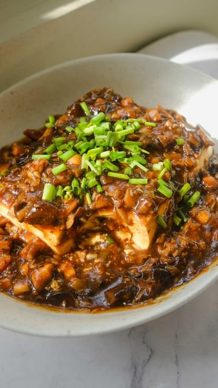


![KFC Style Crusted Jackfruit by @plantcrazii Young green jackfruit has a meat like texture & look to it that truly has my mind blown! After battering and frying them, I dipped these crusted beauties in sweet chili sauce & hot Buffalo sauce! For the batter, I remember going to a vegan festival and having really good battered fried mushrooms and when I asked the vendor what egg substitute she used, she told me milk + vinegar(let it sit for 15 minutes) and that’s all so that is what I did! by **@veganfixes**](img/veganfixes_15-08-2022_1408.png)


- 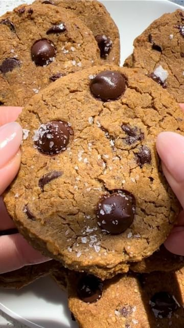


- 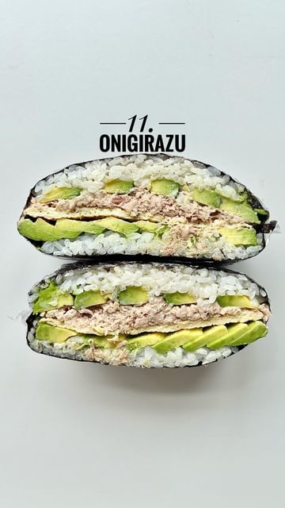


- 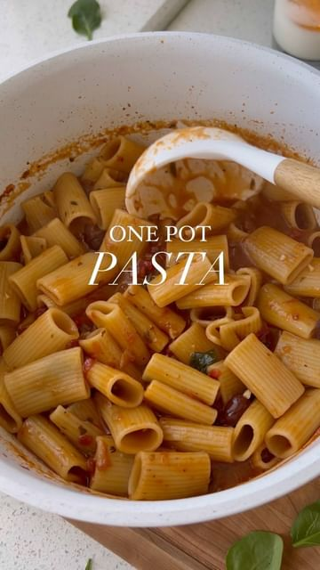


- 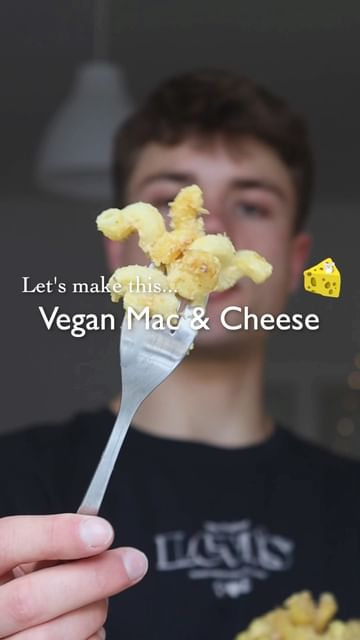


- 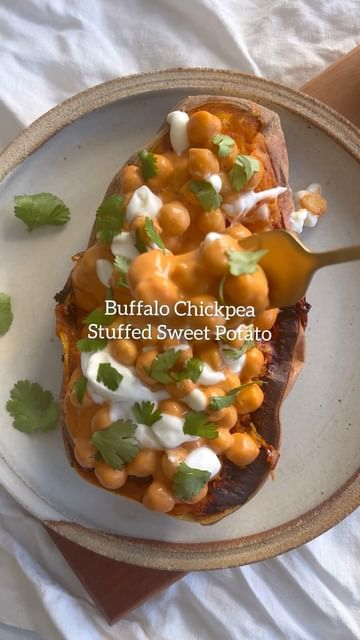


- 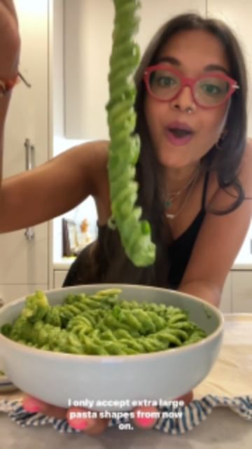


- 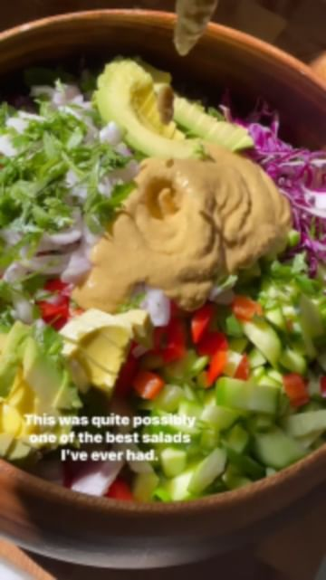
![STEAMED EGGPLANTS in a chili sesame sauce. By @chez.jorge It’s a scorching summer here in taipei so I thought I’d introduce you all to one of my favorite liang ban 涼拌, or “cold-tossed,†dishes. Inspired by cold sesame noodles 麻醬涼麵, this is a dish I loved when I cooked in the US, where lao gan ma è€å¹²åª½ has quite the devoted following. It’s a guizhou-style chili crisp dotted with various preserved goods, conferring an umami flavor like no other. Pair with nutty sesame, peanut, sesame oil, and you’ve got something addictively good. 🥢 by **@veganfixes**](img/veganfixes_26-04-2022_1404.png)


- 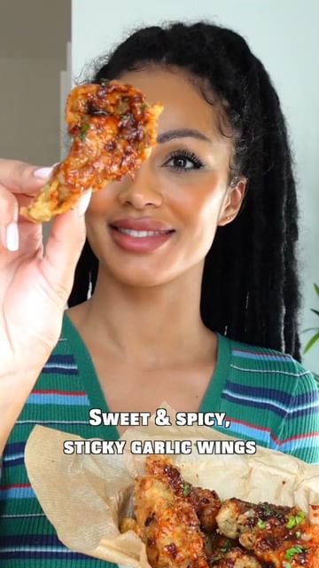


- 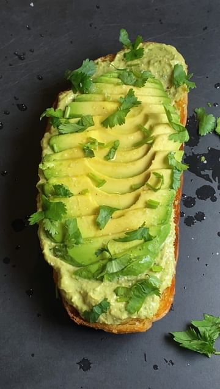


![(AD) Making some THERAPEUTIC CHOC-COVERED DATE CARAMELS to help me get my daily dose of medicinal mushrooms aaand B12! ✨ They’re so satisfying to make and I’ve thrown in my faaaave medicinal mushroom blend from the fabulous Aussie and female-owned @take_bioactives!! These choccies are so easy, yet… so LUXE?! Also I’m going to yelll about this MUSHROOM BLEND FOR A SEC. I’m honestly wild for it because it’s got the whole team, the whole quadfecta: reishi, chaga, cordyceps and lions mane. 😌 We’re talking energy support, less stress, immune support, brain health and a whole lot more but ON TOP OF THAT - ALL 8 B-vitamins jam-packed into it (biologically-availalble so you actually absorb that shhh), including old mate B12 which if you follow a plant based diet, you’ll know is super duper important to staying groovy 🕺🻠Eat choccy and get the most out of your day! by **@itslizmiu**](img/itslizmiu_07-04-2022_2104.png)

![ALFAJORES! 😋 A very delicious and popular sandwich cookie that hails from South America. Traditionally filled with dulce de leche (also called manjar or arequipe) and rolled in coconut but also very commonly found dipped in chocolate. Being made with cornstarch makes the cookies light, delicate and just an all-round delicious super melt-in-your-mouth situation. Today we’re keeping things easy by using @naturescharm Coconut Salted Caramel Sauce which is the perfect vegan dulce de leche 🙏🏼 by **@itslizmiu**](img/itslizmiu_05-04-2022_2104.png)


- 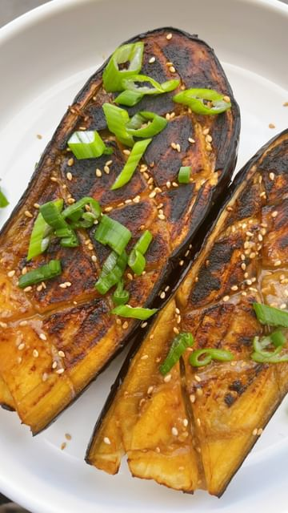


- [![Voglia di uno spuntino? Cavolo nero trasformato in deliziose e super croccanti chips al forno! 🙃🌿🤪 @andreacapodanno
Ingredienti:
2 cucchiai di Olio EVO 1 pizzico di Sale Scorza di Limone BIO 1 spicchio d’aglio schiacciato
Procedimento:
Pulisco il cavolo nero tirandolo dalla base, sfilando dal gambo solo la foglia. Lavo le foglie di cavolo nero sotto acqua corrente e le asciugo poi con un panno pulito (non buttare via i gambi, sono ottimi nel brodo vegetale) Preparo il condimento versando l’olio in una ciotolina e aggiungo il sale, l’aglio schiacciato e la scorza di un limone bio grattugiata. Spennello la superficie delle foglie di cavolo nero su entrambi i lati e cuocio in forno. Basteranno 10 minuti a 180 gradi per rendere le vostre chips croccantissime!
![Congee or Jook 粥 is just one of the best foods out there. It’s simple, easy to make, even easier to eat and just feels so nourishing for the soul 😌✨ In it’s most basic form it’s rice, water and salt but I do think ginger is a must. You pretty much just cook it down til it’s in a consistency you like and it’s pretty hard to screw up! I personally love to eat mine with preserved beancurd - it’s like an umami paste (and I buy one with chilli and sesame oil) and it’s just heavenly. I also like it with soy braised peanuts on top or some coriander 🙏🏼 #congee #recipes by **@itslizmiu**](img/itslizmiu_24-03-2022_2003.png)


![EASY KIMCHI PANCAKES TODAY, FOLKS! ðŸ‘ðŸ¼ðŸ‘🼠Crispy, moreish, savoury, a little tangy from the kimchi and SO mouthwateringly DELICIOUS - you can kinda hear my mouthwatering at the end while I’m eating and talking haha. So exceptionally yum with the dipping sauce. 2-ingredients is technically all you need, Kimchi and flour… and a splash of water perhaps! For vegan kimchi in Sydney I recommend going into a Korean supermarket - there’s a brand called Park’s Kimchi/Byul Mi Kimchi that does a whole range of vegan friendly kimchis - READ THE LABEL. I can send you a photo of the container if you send me a DM! by **@itslizmiu**](img/itslizmiu_14-09-2021_0409.png)


![Thank you for 6million 🥂The best strawberry green salad with a dressing I could chug. If you are tired of boring salads, trust me on this one as it will be on rotation. The magic is in the dice and in the dressing. You are more than welcome to adjust ingredients and make it according to your lifestyle. If you are plant-based I would suggest you use regular Dijon mustard and add maple syrup or agave to it instead. This recipe makes one large portion or 2 small. There is no exact recipe as you can taste and adjust and add as much or as little veggies as you like. You will need: by **@themodernnonna**](img/themodernnonna_01-03-2022_0003.png)


![This Vegan Luncheon Roll🤩 is absolutely TASTY😋 and super easy to make #omnilicious. I haven't had luncheon meat in ages and this OmniPork Luncheon by @omnifoods.global definitely hits all the spot--the texture and taste are all on point! It’s also rich in protein and has far fewer calories than the traditional ones. OmniPork Luncheon can be found at all Sprouts locations nationwide. So, don’t wait and stock it up (I got 4 packs already😄) to make the recipe below! [AD]⣠by **@woon.heng**](img/woon.heng_28-10-2021_1410.png)


![Orange tofu! 🔥🙌🼠It’s so good that I’m not ashamed to tell you this is what I had for breakfast this morning lol! (Someone has to eat the leftovers right?!😂) I hope you like it! â˜ºï¸ It doesn’t taste overly like orange, if you want that powerful orange flavor, use store-bought orange juice! But I prefer using fresh ingredients and I like the subtle orange flavor! â˜ºï¸ I didn’t add too much sugar, just 2 tbsp so make sure to adjust the sauce to your preference once it’s done! 💚🔥 Orange Tofu by **@everyday.vegan.food**](img/everyday.vegan.food_03-11-2018_1611.png)


![I don’t know about you guys, but I need to reset with healthy food after this holiday weekend of feasting...this vegan RED LENTIL SOUP is a great place to start 🙌🏻✨ will make you feel soo dang good, and it’s so incredibly delicious. It has a mostly smooth texture with a little bit of bite, and the tang of the lemon juice added at the end balances out the richness perfectly. Mop it up with some bread and you’re in heaven (@cocobakes sourdough is my fave to serve with this). by **@bakeritablog**](img/bakeritablog_26-11-2018_1711.png)